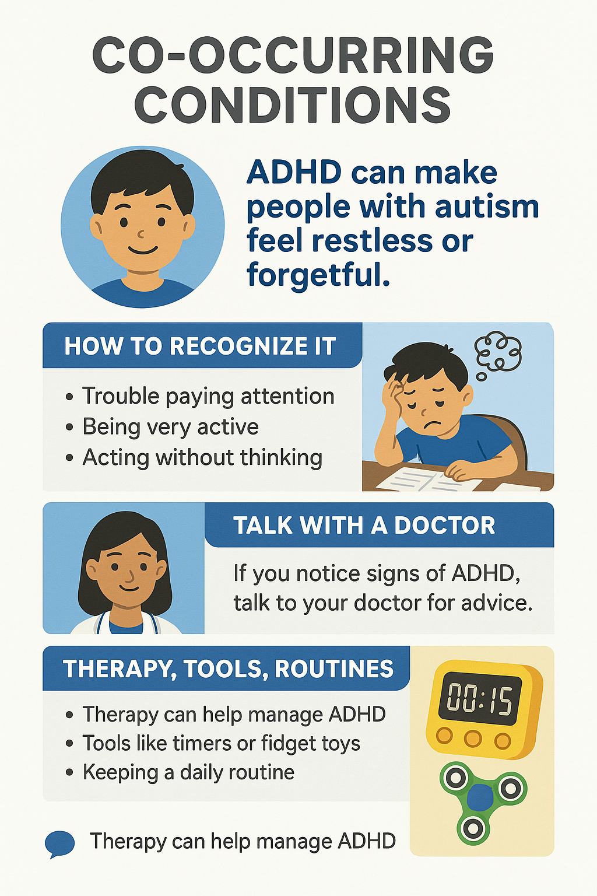
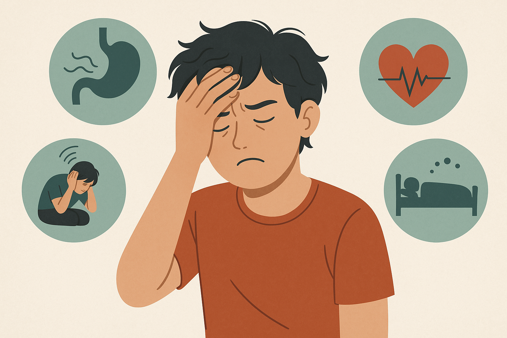
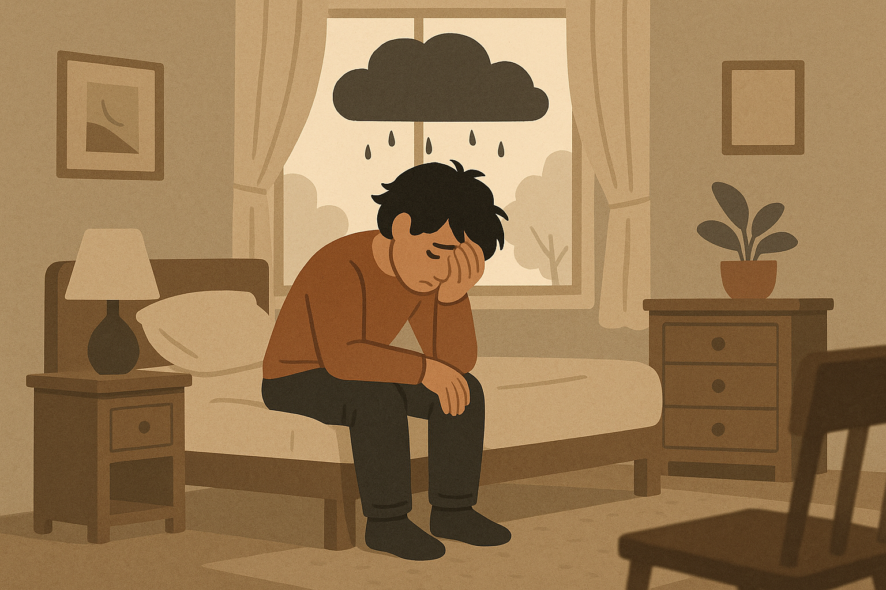
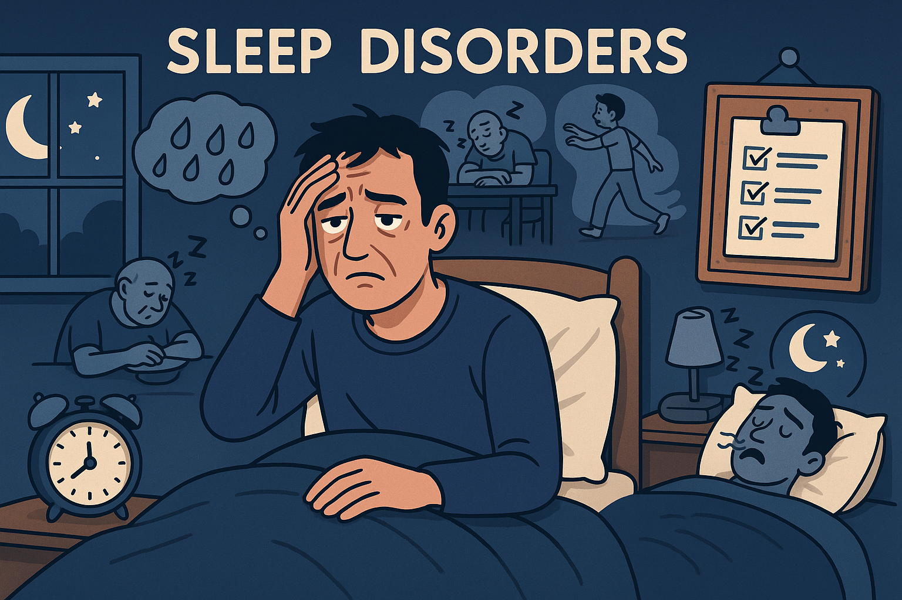
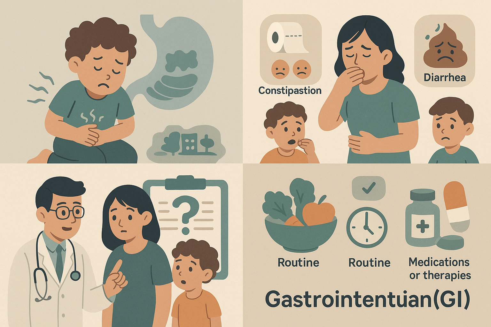
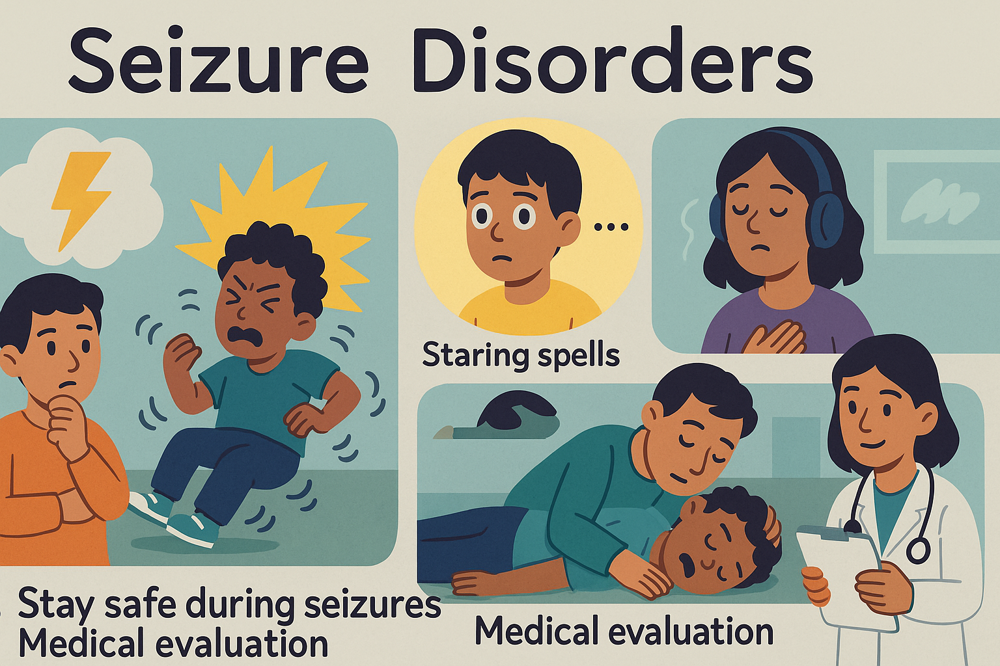

Co-Occurring Conditions:
Welcome! This guide is designed to help people with autism understand other health conditions they might also have. Each section includes what the condition is, how to recognize it, and what to do next.
`"When you have met one person with autism, you have met one person with autism."`
✅ Note: Always talk to a doctor or healthcare professional for a proper diagnosis.
⚡ Condition 1: Attention Deficit Hyperactivity Disorder (ADHD)

🔍 What is it?
ADHD is a condition that makes it hard to pay attention or sit still. People with ADHD often have inattention (daydreaming, forgetfulness) or hyperactivity (fidgeting, talking a lot). ADHD is common in autism. It means the brain’s attention and activity controls are different.
👁️ How to recognize it:
- Trouble staying focused: making careless mistakes, losing items, daydreaming.
- Restlessness: fidgeting hands/feet, can’t sit still.
- Impulsivity: blurting out answers, interrupting, acting without thinking.
- Forgetfulness and disorganization: hard to finish tasks or follow instructions.
📌 Next steps:
- Talk to a doctor: If these signs match you or someone you know, see a healthcare provider for an ADHD evaluation.
- Therapy and supports: Therapists can teach skills (behavior therapy, social skills training) and schools can offer help (extra time or breaks).
- Medication (if needed): A doctor may prescribe stimulants or other medicines to help focus, used carefully.
-
Lifestyle habits: Keep a routine, use timers or organizers, get regular exercise, and ensure good sleep and a healthy diet. These healthy habits (fruits/veggies, exercise, enough sleep) can improve focus and mood.
Key Points: ADHD can make people with autism feel restless or forgetful. If you notice these signs, talk with a doctor 2 . Therapies, tools (like timers or fidget toys), and routines can help manage ADHD and make daily life easier.
🔗 Learn more from CHADD (Children and Adults with ADHD)
📊 Fun Fact: Up to 70% of people with autism also have ADHD!
😰 Condition 2: Anxiety Disorders

🔍 What is it?
Anxiety disorders mean feeling extreme fear or worry that doesn’t go away. It’s more than being nervous before a test or event. For someone with autism, anxiety can show up as panic, social fears, or phobias. Anxiety disorders often co-occur with autism. By definition, anxiety becomes a disorder when “anxiety does not go away, is felt in many situations, and can get worse over time”.
👁️ How to recognize it:
- Excessive worry or fear: Constant nervousness about school, friends, or everyday events.
- Physical symptoms: Stomachaches, headaches, rapid heartbeat, sweating, or trembling when anxious.
- Avoidance: Trying to escape or avoid places, people, or situations (e.g. avoiding school or loud places).
- Restlessness or irritability: Trouble sleeping, seeming on-edge, or quick to get upset over small things.
📌 Next steps:
- Talk to a healthcare provider: If anxiety interferes with life (school or social activities), discuss it with a doctor or psychologist. They can help diagnose anxiety disorders.
- Therapies: Cognitive-behavioral therapy (CBT) or counseling can teach coping skills (how to face fears step-by-step, relaxation techniques).
- Lifestyle changes: Practice healthy routines – regular exercise, a balanced diet, and enough sleep Parents can help by creating a calm, predictable routine and teaching simple relaxation (deep breathing).
-
Safe spaces and supports: Use noise-canceling headphones or quiet breaks when overwhelmed. Mindfulness, gentle yoga, or hobbies can reduce stress.
Key Points: Anxiety is common in autism and can look like constant worry or fear. If anxiety hurts daily life, talk with a doctor who may recommend therapy (like CBT) or strategies to help. Healthy habits (sleep, exercise) and gradual exposure (facing small fears step-by-step) also help.
🔗 Learn more from the Anxiety & Depression Association of America
😔 Condition 3: Depression

🔍 What is it?
Depression is more than feeling sad for a day. It means persistent sadness or loss of interest that lasts weeks and affects daily life. People with autism can feel depressed too. Depression can cause deep tiredness and hopeless feelings. The CDC describes signs such as “feeling sad or anxious often or all the time” and “not wanting to do activities that used to be fun”
👁️ How to recognize it:
- Persistent sadness or irritability: Feeling down, empty, or easily frustrated most of the time.
- Loss of interest: No longer enjoying activities, friends, or games one used to like.
- Sleep and appetite changes: Sleeping too much or too little; eating much more or less than usual.
- Physical symptoms: Ongoing body aches, headaches, or stomachaches without a clear cause.
- Low energy and self-worth: Feeling tired all the time, worthless, or guilty. Difficulty concentrating or making decisions.
📌 Next steps:
- Reach out for help: If someone feels this way for weeks, talk to a healthcare provider immediately. This is important especially if thoughts of self-harm occur.
- Therapy: A counselor or psychologist can offer talk therapy (such as cognitive-behavioral therapy) to help cope with feelings.
- Medication: A doctor may prescribe antidepressant medications if needed, often along with therapy.
- Lifestyle and routine: Keep a healthy schedule (regular meals, activity, sleep). Gentle exercise (walking, swimming) and time outdoors can lift mood. Make sure to include fun activities or hobbies as much as possible.
-
Support: Stay connected with friends/family. Sharing feelings with someone trusted can provide relief.
Key Points: Depression causes deep sadness or irritability that lasts a long time. Tell a doctor or counselor if you notice these signs 11 . Treatment (like talk therapy, support, healthy routines) can help you feel better. You deserve help and hope.
🔗 Learn more from the National Institute of Mental Health
😴 Condition 4: Sleep Disorders

🔍 What is it?
Sleep disorders are problems falling asleep, staying asleep, or feeling rested. In autism, many have trouble sleeping or feeling sleepy during the day. According to the Mayo Clinic, sleep disorders “change the way you sleep” so you don’t get enough rest, leading to daytime tiredness.
👁️ How to recognize it:
- Trouble falling asleep or staying asleep: Lying awake for a long time at night, waking up often, or waking too early and unable to return to sleep.
- Daytime sleepiness: Feeling very sleepy in the day, even dozing off during meals or classes.
- Snoring or breathing pauses: Loud snoring, gasping, or choking sounds during sleep can signal sleep apnea.
- Restless legs/teeth grinding: If legs twitch or grind teeth at night, it can disturb sleep.
- Bed-wetting or sleepwalking: Unusual activities while asleep may occur in some sleep disorders.
📌 Next steps:
- Good sleep habits: Establish a quiet, dark bedtime routine. Go to bed and wake up at the same times each day. Avoid screens and caffeine (like soda) in the evening.
- Bedroom environment: Make the bedroom comfortable and calm (cool temperature, comfortable mattress). For sensory issues, consider a weighted blanket or white noise.
- Talk to a doctor: If problems continue, discuss with a pediatrician or sleep specialist. They may check for conditions like sleep apnea or restless leg syndrome.
-
Possible treatments: Doctors may recommend melatonin (a sleep supplement), breathing devices (CPAP) for apnea, or special exercises.
Key Points: Good sleep is vital. If you or your child often feel tired, have trouble sleeping, or snore loudly, talk to a doctor. Lifestyle fixes (bedtime routine, limit screens) can help, and medical treatment may be needed to restore healthy sleep.
🔗 Learn more from Sleep Foundation
🍽️ Condition 5: Gastrointestinal (GI) Issues

🔍 What is it?
GI issues include stomach and digestive problems like abdominal pain, constipation, or diarrhea. These are very common in autism. Mayo Clinic notes that children with autism “tend to have more medical issues, including gastrointestinal (GI) symptoms such as abdominal pain, constipation and diarrhea”.
👁️ How to recognize it:
- Tummy pain or cramps: Complaints of stomach ache, especially after eating.
- Constipation or diarrhea: Irregular or painful bowel movements. (Constipation often means hard stools infrequently; diarrhea is loose, frequent stools.)
- Other signs: Vomiting, gas/bloating, reflux (heartburn or throwing up after eating). Changes in appetite or unexplained weight loss/gain may occur.
- Behavioral clues: In younger/nonverbal people, watch for irritability or clutching belly, which may signal pain.
📌 Next steps:
- See a doctor: Tell your pediatrician or GI specialist about symptoms. They may ask about diet, keep a food diary, or run tests (like checking iron levels or celiac disease) to find causes.
- Dietary changes: Increase fiber with fruits, vegetables, and whole grains. Drink plenty of water (especially with constipation). Identify and avoid any foods that trigger symptoms. A dietitian can help plan meals that are varied and nutritious.
- Routine: Encourage regular meal and bathroom times. Gentle exercise (walking, stretching) can stimulate digestion.
- Medications or therapies: Doctors may suggest stool softeners or laxatives for constipation, or acid-reducers for reflux. Probiotics (good bacteria) sometimes help upset stomachs.
-
Nutrient check: Ensure a balanced diet or supplements if picky eating limits nutrition (see Nutritional Deficiencies section).
Key Points: Stomach issues often go hand-in-hand with autism. If someone has belly pain, constipation, or other GI symptoms, talk to a doctor. Small diet changes, hydration, and medical advice can help your digestion improve and make eating more comfortable.
🔗 Learn more from Autism Speaks
⚡ Condition 6: Seizure Disorders

🔍 What is it?
Seizure disorders mean the brain has sudden bursts of electrical activity causing unusual behaviors. A seizure can look like staring blankly, jerking movements, or muscle stiffness. Not all seizures are epilepsy (more below), but any unexplained seizure should be checked.
👁️ How to recognize it:
- Convulsions: Jerking or twitching of arms and legs. The person may fall or slump.
- Staring spells: Suddenly stopping and staring into space for a few seconds (often mistaken for daydreaming).
- Unresponsiveness: Not reacting to people or sound during the episode.
- Other signs: Strange sensations or feelings (aura) just before a seizure (like a funny taste, smell, or feeling of fear).
📌 Next steps:
- Stay safe during seizures: For someone having a convulsive seizure, gently protect their head, remove sharp objects, and roll them on their side to keep airway clear. Don’t put anything in their mouth.
- Medical evaluation: If any seizure occurs, even once, see a doctor right away. They may do EEG brain tests or MRI to find causes.
- Diagnosis: Two or more unprovoked seizures usually means a diagnosis of epilepsy.
- Treatment: A neurologist may prescribe anti-seizure medication, which can prevent or reduce seizures in most people. Follow the medication plan carefully.
-
Prepare: If epilepsy is diagnosed, work with the doctor to create a safety plan (e.g. avoid swimming alone, use helmets for high-risk activities).
Key Points: Seizures are caused by unusual brain activity. After any seizure, talk to a doctor for evaluation. Treatments (like medication) often control seizures 19 . People with autism who have seizures may also benefit from therapies and supports just like anyone with epilepsy.
🔗 Epilepsy Foundation Resources
👂 Condition 7: Sensory Processing Disorder (SPD)
🔍 What is it?
Sensory Processing Disorder means the brain has trouble handling sensory information (sight, sound, touch, taste, smell, balance, body awareness). Many autistic people experience it as over-sensitivity or under-sensitivity to things like lights, sounds, textures, or tastes.
👁️ How to recognize it:
- Over-responsiveness (hypersensitivity): Covers ears or cries at loud sounds; avoids bright lights or busy places; refuses certain clothing textures; gags at many smells or tastes.
- Under-responsiveness (hyposensitivity): Seeks strong sensations, like spinning or rocking a lot; seems unaware of pain or temperature; eats only very spicy or very bland foods; likes to touch everything.
- Movement issues: Bumps into things or often loses balance (vestibular sense), or difficulty knowing where limbs are (proprioception).
- Emotional signs: Easily overwhelmed or “melts down” in sensory-rich environments; may cover eyes/ears or panic.
📌 Next steps:
- Occupational therapy: A trained OT can assess sensory needs and teach coping strategies or provide a “sensory diet” (daily activities like swinging, bouncing, or fidget tools to help self-regulate).
- Home adaptations: Use noise-canceling headphones or sunglasses for loud/bright places. Let a child have quiet breaks in a calm space when needed.
- Routine & structure: Plan for sensory breaks during the day (e.g. a walk, squeeze breaks).
- Tools: Weighted blankets, chewable jewelry, or fidget toys can help provide comforting sensory input.
-
Communication: Teach the person to signal when something is too much (like a card or sign) so others can help reduce the stimulus.
Key Points: Sensory issues mean normal sights/sounds/feelings may feel too strong or too weak. For example, loud noises or scratchy clothes can upset someone with autism. Strategies like headphones, calming exercises, and therapy can help balance the sensory system and reduce overload.
🔗 STAR Institute for Sensory Processing
🧠 Condition 8: Intellectual Disability
🔍 What is it?
Intellectual Disability is when a person’s learning and daily skills develop more slowly than typical. It means limitations in learning, reasoning, and everyday functioning. As the CDC explains, “Intellectual disability is a term used when there are limits to a person’s ability to learn at an expected level and function in daily life”.
👁️ How to recognize it:
- Developmental delays: Sitting up, crawling, walking, and talking later than most children of the same age.
- Learning difficulties: Trouble remembering, understanding, or applying information. Learning new skills (like dressing or using the bathroom) may take more time.
- Communication and social skills: May speak later or have limited speech. Difficulty understanding social rules or reading social cues (like knowing personal space or tone of voice).
- Problem-solving challenges: Hard to figure out problems, plan steps to do something, or see consequences of actions.
📌 Next steps:
- Early evaluation: Talk with your doctor or pediatrician if you notice delays. They can refer you to specialists (developmental pediatrician, neurologist, or psychologist) for testing. Early evaluation leads to early support.
- Educational support: Children may qualify for early intervention or special education programs to learn skills. Individualized Education Plans (IEPs) in school can provide extra help.
- Therapies: Speech therapy, occupational therapy, and physical therapy can improve communication, daily living, and motor skills.
- Daily life strategies: Use simple, clear instructions and routines. Break tasks into small steps. Praise successes and provide positive support.
-
Family support: Join support groups or seek resources (CDC’s Parent Center) to help learn strategies and resources.
Key Points: Intellectual disability means learning and daily skills develop more slowly. If a child misses milestones or struggles in school, consult a doctor or early intervention for testing and support. Therapies and special education can help the child reach their full potential.
🔗 CDC - Intellectual Disability
🧬 Condition 9: Fragile X Syndrome
🔍 What is it?
Fragile X is a genetic condition and one of the most common inherited causes of autism and intellectual disability. It is caused by a mutation on the X chromosome. People with Fragile X often have developmental delays and behavior differences.
👁️ How to recognize it:
- Learning/developmental issues: Many have delayed speech, learning disabilities, or intellectual disability. They may struggle academically.
- Behavioral features: Anxiety, ADHD symptoms, or autism-like behaviors (hand-flapping, rocking) are common. Children may avoid eye contact or be socially shy.
- Physical traits: Some have a long, narrow face, large ears, and flexible joints. In boys, testes can be larger after puberty.
- Sensory issues: Often sensitive to sound, lights, or clothing texture.
📌 Next steps:
- Genetic testing and counseling: A doctor can confirm Fragile X with a blood test. Families often see a genetics specialist for diagnosis and family planning advice.
- Therapy: Early intervention programs (speech, occupational, behavioral therapy) can help with development and communication. Specialized education is beneficial.
- Medical treatments: Medications may help specific symptoms – e.g. stimulants for ADHD, SSRIs for anxiety, or anticonvulsants if seizures occur. Discuss options with a doctor.
- Support: Provide a structured routine and clear expectations. Use visual aids for learning (charts, pictures) as recommended by experts.
-
Family resources: Connect with Fragile X support organizations. They offer guidance on therapies and supports.
Key Points: Fragile X causes learning delays and sometimes autism-like behavior. A genetic test can confirm it. Treatment focuses on managing symptoms with therapies (speech, behavior) and, when needed, medications. Early support helps children with Fragile X thrive.
🧬 Condition 10: Tuberous Sclerosis Complex (TSC)
🔍 What is it?
TSC is a rare genetic disorder that causes benign tumors (noncancerous growths) to form in many organs of the body. These growths, called tubers, most often appear in the brain, skin, kidneys, heart, and lungs. TSC symptoms vary by where tumors grow.
👁️ How to recognize it:
- Skin findings: Common early sign is pale “ash leaf” spots on the skin. Other skin signs include red bumps on the face or bumps under the nails (fibromas).
- Seizures: Many with TSC have seizures (often in infancy) because brain tubers disrupt neural activity.
- Developmental issues: Learning disabilities, developmental delays, or autism/ADHD traits often occur.
- Kidney problems: Tumors or cysts in kidneys can cause pain or blood in urine (doctors will check kidneys with ultrasound).
- Heart/other: In infants, heart tumors may cause a heart murmur. TSC tumors can also affect lungs or eyes.
📌 Next steps:
- Specialist care: If TSC is suspected, see a geneticist or neurologist. They will do imaging tests (MRI of brain/heart, ultrasounds of kidneys/lungs) to identify tumors.
- Treatments: Anti-seizure medications can help control seizures. Some tumors respond to medication (mTOR inhibitors) or surgery if needed.
- Regular check-ups: Lifelong monitoring is important. Follow-up with specialists to watch for changes in tumors, kidney function, heart health, and development.
- Therapies: Early intervention for developmental delays (speech, educational support) is helpful. Behavioral therapies address autism/ADHD if present.
-
Family counseling: Genetic counseling is important, since TSC is inherited. Families can learn about risks and management.
Key Points: Tuberous sclerosis causes growths in many organs (brain, skin, kidneys). It often leads to seizures and developmental delays. Comprehensive care (neurologist, kidney doctor, etc.) is needed: treat seizures, monitor tumors, and provide therapies so the person can stay as healthy as possible.
⚡ Condition 11: Epilepsy
🔍 What is it?
Epilepsy is a brain condition that causes recurrent seizures. One seizure does not mean epilepsy; epilepsy is diagnosed when a person has two or more unprovoked seizures. Seizures in epilepsy can look like convulsions or staring spells.
👁️ How to recognize it:
- Varied seizure types: Some seizures cause jerking movements (convulsions), while others cause staring spells or brief unresponsiveness.
- Loss of consciousness: The person may pass out or not respond for a short time.
- Warning signs (auras): Some feel something odd before a seizure, like a funny smell, taste, feeling of fear, or visual changes.
- Repetitive behaviors: Lip-smacking, hand movements, or confusion during or after a seizure are possible.
📌 Next steps:
- See a neurologist: Diagnosis is typically made by a neurologist. They may use EEG brain wave tests or brain imaging (MRI) to study the seizures.
- Medication: Most people with epilepsy take anti-seizure medication. As Mayo Clinic notes, “Treatment with medicines ... can control seizures for most people”. Take medicines exactly as prescribed.
- Safety measures: Make sure to stay safe during seizures (padded crib rails for children, supervision around water). Discuss driving and activities based on seizure control.
- Lifestyle: Regular sleep and stress reduction can help reduce seizures. Keep a seizure diary to track triggers and medication effects.
-
Support: Education plans (504 plans) at school can provide rest breaks or medical alert plans. Seizure response training for family/teachers is also recommended.
Key Points: Epilepsy is diagnosed when seizures happen repeatedly. It’s managed with medication and safety plans. With treatment, many people with epilepsy live full lives. Remember, talk to the doctor about seizures and follow their treatment plan.
🔗 Epilepsy Foundation Resources
🔋 Condition 12: Mitochondrial Disorders
🔍 What is it?
Mitochondria make energy in your cells. These disorders cause energy problems. Mitochondrial disorders are genetic conditions in which the cellular energy factories (mitochondria) do not work properly. Because mitochondria power every cell, these disorders can affect many parts of the body.
👁️ How to recognize it:
- Low energy and muscle weakness: Frequent fatigue, muscle aches, or easy tiredness with exercise.
- Developmental delays: Many children have slowed development (motor skills, speech) or learning challenges.
- Neurological issues: Seizures, headaches, dizziness, or strokes can occur because the brain needs lots of energy.
- Organ problems: Heart (arrhythmias or muscle problems), vision/hearing loss, and digestive issues (poor growth, constipation or vomiting) are common.
- Metabolic signs: Low blood sugar or unusual blood/urine results (like high lactic acid) when tested.
📌 Next steps:
- Specialist evaluation: See a metabolic or genetic specialist. Diagnosis often involves blood tests (including lactate/pyruvate levels), genetic testing, and sometimes muscle biopsy.
- Genetic testing: Genetic testing of mitochondrial and nuclear DNA is a key tool for diagnosis. This can identify the specific gene mutation.
- Dietary support: Frequent small meals, sometimes a high-fat (ketogenic) diet, may be recommended to provide energy. Avoid fasting. Vitamin supplements (like B vitamins, CoQ10, carnitine) are often used under doctor’s guidance.
- Manage symptoms: Treat seizures, diabetes, or heart issues according to standard care. Regular physiotherapy can help muscle weakness.
-
Regular monitoring: Heart, vision, and kidney function should be checked regularly by specialists.
Key Points: Mitochondrial disorders impair the body’s energy production. This causes fatigue, muscle weakness, and can affect the brain and organs. Diagnosis requires specialist tests (often genetic). While there’s no cure, therapies (like diet changes and supplements) and supportive care can improve quality of life.
🔗 United Mitochondrial Disease Foundation
🤸♂️ Condition 13: Ehlers-Danlos Syndrome (EDS)
🔍 What is it?
Ehlers-Danlos syndromes are inherited disorders of connective tissue (collagen), which give strength and elasticity to skin and joints. In simple terms, people with EDS often have very flexible joints and stretchy skin.
👁️ How to recognize it:
- Hyper-flexible joints: Joints can bend far beyond normal. This often leads to joint pain, sprains, or dislocations (e.g., elbows, knees, fingers hyperextending).
- Very stretchy, soft skin: The skin may stretch more than usual and feel velvety. Bruises or scars often appear because skin is fragile. A light pinch of skin may lift higher than normal.
- Slow wound healing: Cuts may take longer to heal and often leave thin, widened scars. Stitches might not hold well.
- Chronic pain and fatigue: Ongoing joint or muscle pain, easy fatigue due to unstable joints.
📌 Next steps:
- Medical diagnosis: Talk to a doctor (geneticist or rheumatologist). They may look for joint flexibility and skin changes and may order genetic tests.
- Protect joints: Use braces or tape for unstable joints. Engage in low-impact exercises (swimming, Pilates) to strengthen muscles without straining joints. Avoid contact sports or heavy lifting.
- Physical therapy: A PT can teach safe movement and exercises to support joints and posture.
- Skin care: Use gentle skin care. For wound care, medical attention is needed as stitches may pull through. Keep skin well-moisturized.
-
Pain management: Medications (like pain relievers) or other therapies (massage, heat) can reduce chronic pain.
Key Points: EDS causes extra-flexible joints and elastic, fragile skin. People with autism and EDS need extra care: braces for joints, gentle exercise, and careful skin protection. A genetics or connective-tissue specialist can diagnose EDS and recommend therapies to prevent injuries.
📖 Condition 14: Dyslexia
🔍 What is it?
Dyslexia is a learning disorder that makes reading difficult. It stems from how the brain processes language. Dyslexia is not related to intelligence; many people with dyslexia are very bright but have trouble reading and spelling.
👁️ How to recognize it:
- Difficulty sounding out words: Trouble “decoding” – matching letters to sounds, so unfamiliar words are hard to pronounce.
- Reading errors: Skipping or misreading small words; reading slowly and below expected level.
- Spelling problems: Frequent spelling mistakes, even simple words, and inconsistent spelling.
- Avoiding reading tasks: May dislike or avoid reading or writing activities. Takes a very long time to complete reading or writing.
- Other clues: Trouble with rhymes or learning new words as a child; swapping similar-looking letters (like ‘b’ and ‘d’).
📌 Next steps:
- Formal evaluation: If dyslexia is suspected, ask for a formal assessment by a psychologist or educational specialist. Schools often have resources for learning evaluations.
- Specialized instruction: Structured literacy programs (multi-sensory reading instruction) can improve reading skills. Tutors trained in dyslexia strategies can help.
- Accommodations: Extra time on tests, audiobooks, or text-to-speech software can assist. Using colored overlays or dyslexia-friendly fonts may help some readers.
-
Practice and support: Regular practice with reading and phonics (sound-letter practice) is key. Encouragement and patience help build confidence.
Key Points: Dyslexia means reading is unusually hard, but it isn’t about being smart. Early help is crucial. With the right teaching methods and supports, people with dyslexia can become good readers and learners.
🔗 International Dyslexia Association
✍️ Condition 15: Dysgraphia
🔍 What is it?
Dysgraphia is a writing disability involving poor handwriting and difficulty expressing ideas on paper. It’s not due to lack of effort; rather, the brain has trouble with the physical act of writing and sometimes with spelling.
👁️ How to recognize it:
- Illegible handwriting: Writing that is hard to read, with inconsistent letter size or shape.
- Slow, painful writing: Writing takes an unusually long time or causes hand cramps.
- Spelling and grammar errors: Frequent spelling mistakes, even of simple words; trouble putting thoughts into written words.
- Messy work: Papers with erased mistakes, lots of scribbles, or mixing print and cursive.
- Avoidance: Frustration with writing tasks, avoiding writing or getting easily upset when asked to write.
📌 Next steps:
- Occupational therapy: An OT can teach fine motor skills (hand strengthening exercises) and handwriting techniques.
- Use technology: Allow typing on a computer, speech-to-text software, or recording answers orally for schoolwork.
- Writing aids: Special pencils/grips, lined or raised-line paper, and proper desk ergonomics can improve control.
- Educational support: At school, allow extra time for written assignments and consider giving oral tests if needed. Encourage dictation of ideas before writing.
-
Practice: Regular short handwriting practice with multisensory methods (e.g. writing letters in sand) can help.
Key Points: Dysgraphia means writing by hand is unusually difficult 52 . Tools like typing, occupational therapy, and accommodations (like extra time) can greatly help someone with dysgraphia succeed in school and daily tasks.
🥦 Condition 16: Nutritional Deficiencies
🔍 What is it?
Nutritional deficiencies occur when the body doesn’t get enough vitamins or minerals from the diet. In autism, picky eating and restricted diets can increase this risk. Common deficiencies include low calcium (important for bones) and protein, as well as vitamins like D, A, or B12.
👁️ How to recognize it:
- General fatigue or weakness: Feeling very tired or lethargic (often from low iron or B12).
- Pale or pale skin: Anemia from iron or folate deficiency can cause paleness and breathlessness.
- Slow growth or weight issues: Not gaining weight or growing as expected in children.
- Bone/joint pain or fractures: Vitamin D or calcium deficiency can lead to weak bones.
- Frequent illness: Poor nutrition can weaken the immune system.
📌 Next steps:
- Balanced diet: Work with a doctor or dietitian to include a variety of foods. Even if it’s hard, try one new food at a time. Foods rich in needed nutrients (dairy or fortified milk for calcium/Vit D, meat/beans for iron, colorful veggies for vitamins) should be included if possible.
- Supplements: A pediatrician may recommend a daily multivitamin or specific supplements (iron, vitamin D, etc.) if diet alone is insufficient. Do not take supplements without medical advice.
- Regular health check-ups: Doctors can monitor growth and ask about eating habits. Blood tests can check nutrient levels if deficiencies are suspected.
- Safe diet changes: If considering special diets (like gluten-free), consult a professional to avoid unintended deficiencies.
-
Encourage gradual changes: Use strategies (described in Autism Speaks resources) to gently expand the diet. Involve child in meal prep or try sensory-friendly food textures.
Key Points: Picky eating in autism can lead to not getting enough vitamins/minerals. If signs like fatigue or slow growth appear, talk to a doctor. A healthy, varied diet and, if needed, supplements can prevent deficiencies and keep the body strong.
❤️ Condition 17: Postural Orthostatic Tachycardia Syndrome (POTS)
🔍 What is it?
Postural Orthostatic Tachycardia Syndrome (POTS) is a medical condition that affects the autonomic nervous system, which regulates various bodily functions such as heart rate, blood pressure, and digestion. In POTS, the heart rate increases excessively upon standing, leading to symptoms such as dizziness, lightheadedness, and fatigue. Individuals with autism are at a higher risk of developing POTS due to differences in autonomic nervous system function and sensory processing.
👁️ How to recognize it:
- Rapid heart rate: An increase in heart rate of 30 beats per minute or more within 10 minutes of standing.
- Dizziness or lightheadedness: Feeling faint or disoriented when standing up or changing positions.
- Fatigue: Persistent tiredness or exhaustion, especially after standing or exerting oneself.
- Headaches: Frequent or severe headaches, often accompanied by nausea or vomiting.
- Nausea and vomiting: Stomach upset or vomiting, especially after eating or standing.
- Abdominal pain: Cramping or discomfort in the abdomen, often accompanied by changes in bowel movements.
📌 Next steps:
- Medical evaluation: Consult a doctor to rule out other conditions that may be causing symptoms. A thorough medical history, physical examination, and diagnostic tests (such as electrocardiogram, blood tests, or tilt table test) can help diagnose POTS.
- Lifestyle modifications: Increase salt and fluid intake to help regulate blood volume and blood pressure. Avoid standing for long periods, and take regular breaks to rest and hydrate.
- Medications: Beta blockers, fludrocortisone, or midodrine may be prescribed to help regulate heart rate and blood pressure.
- Physical therapy: Gentle exercises, such as yoga or stretching, can help improve orthostatic tolerance and reduce symptoms.
- Dietary changes: Eat small, frequent meals to avoid postprandial orthostatic tachycardia syndrome (POTS). Avoid triggers like caffeine, alcohol, and spicy foods.
-
Autonomic nervous system training: Techniques like heart rate variability training, biofeedback, or meditation can help regulate the autonomic nervous system and reduce POTS symptoms.
Key Points: POTS is a condition that affects the autonomic nervous system, leading to rapid heart rate, dizziness, and fatigue upon standing. Individuals with autism are at a higher risk of developing POTS. A comprehensive medical evaluation, lifestyle modifications, and medications can help manage symptoms and improve quality of life.
🔗 Dysautonomia International – POTS
✅ Summary Box
| Condition | Common in Autism? | Talk to... | Can be Treated? |
|---|---|---|---|
| ADHD | ✔ Yes | Doctor or therapist | ✔ Yes |
| Anxiety | ✔ Yes | Therapist | ✔ Yes |
| Depression | ✔ Yes | Doctor or counselor | ✔ Yes |
| Sleep Disorders | ✔ Yes | Sleep specialist | ✔ Yes |
| GI Issues | ✔ Yes | Gastroenterologist | ✔ Yes |
| Seizures | ✔ Yes | Neurologist | ✔ Yes |
| Sensory Processing | ✔ Yes | Occupational therapist | ✔ Yes |
| Intellectual Disability | ✔ Yes | Specialist | ✔ Yes |
| Fragile X Syndrome | ✔ Yes | Genetic counselor | ✔ Yes |
| Tuberous Sclerosis | ✔ Yes | Geneticist | ✔ Yes |
| Epilepsy | ✔ Yes | Neurologist | ✔ Yes |
| Mitochondrial Disorders | ✔ Yes | Neurologist, geneticist | ✔ Yes |
| Ehlers-Danlos Syndrome | ✔ Yes | Geneticist, rheumatologist | ✔ Yes |
| Dyslexia | ✔ Yes | Learning specialist | ✔ Yes |
| Dysgraphia | ✔ Yes | Occupational therapist | ✔ Yes |
| Nutritional Deficiency | ✔ Yes | Dietitian | ✔ Yes |
| POTS | ✔ Yes | Doctor or therapist | ✔ Yes |
💬 Need Help? Talk to a parent, caregiver, teacher, or trusted adult. You're not alone, and support is available!